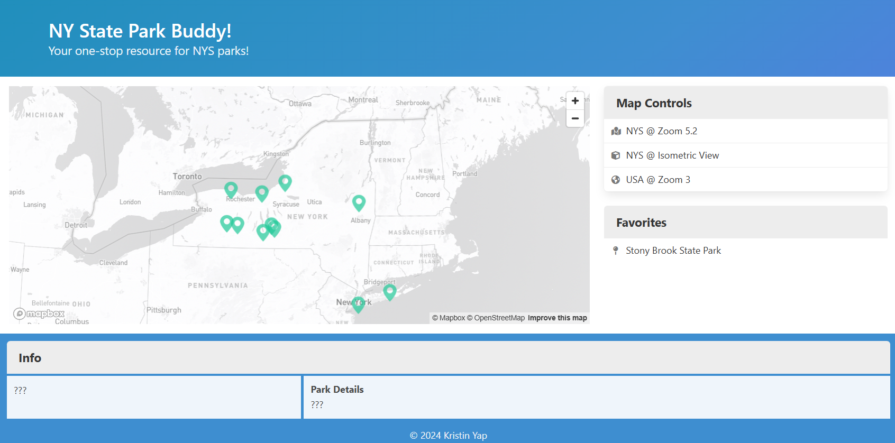

NY Park Viewer
NY Park Viewer is a web app that uses a free Mapbox API. Users are able to view popular state parks within New York State on an interactive map. Users can click on a park to view more information and add it to their list of favorite parks!
